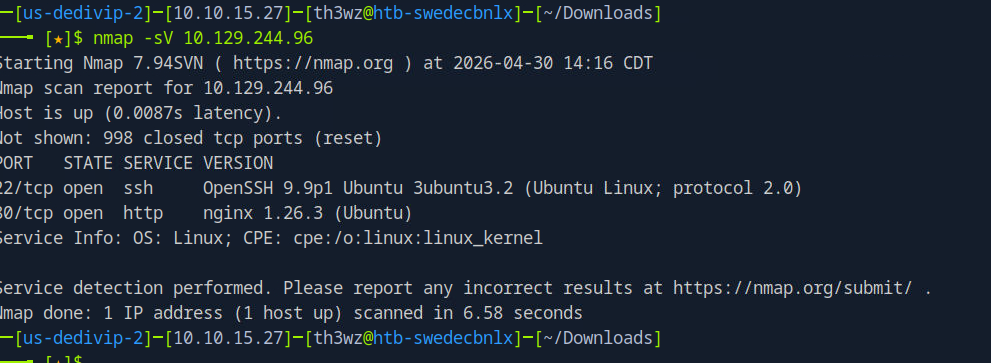

Facts
Dificuldade: Easy | SO: Linux | Release: Active
Informações Gerais
| Campo | Valor |
|---|---|
| Nome | Facts |
| IP | 10.129.244.96 |
| SO | Linux |
| Dificuldade | Easy |
| Data | 30/04/2025 |
| Release | Active |
| Status | Em Andamento |
Enumeração Inicial
Portas Abertas
| Porta | Serviço | Versão |
|---|---|---|
| 22 | ssh | OpenSSH 9.9p1 |
| 80 | http | Nginx 1.26.3 (Ubuntu) |
Comandos
Exploração
Vetor de Entrada
| Campo | Valor |
|---|---|
| Vetor | Web |
| Falha | Enumeração de diretórios web |
| Ferramentas | Navegador, código fonte |
Passo 1 - Scan inicial
Fiz um Nmap simples:

Passo 2 - Análise do código fonte
Acessando o link encontrado no HTML da página principal, tive acesso às seguintes informações:
HostId: dd9025bab4ad464b049177c95eb6ebf374d3b3fd1af9251148b658df7ac2e3e8

Passo 3 - Descoberta de endpoint
http://facts.htb/randomfacts/ encontrei essa URL vendo o código fonte da página.

Resumo Técnico
| Campo | Valor |
|---|---|
| Causa Raiz | Em investigação |
| Cadeia de Ataque | Enumeração web → Descoberta de endpoint → Exploração em andamento |
| Tempo Total | Em progresso |
Lições Aprendidas
- O que funcionou bem: Análise de código fonte para descobrir endpoints
- O que atrasou: Exploração em andamento
- Comandos para revisar depois: Técnicas de enumeração web